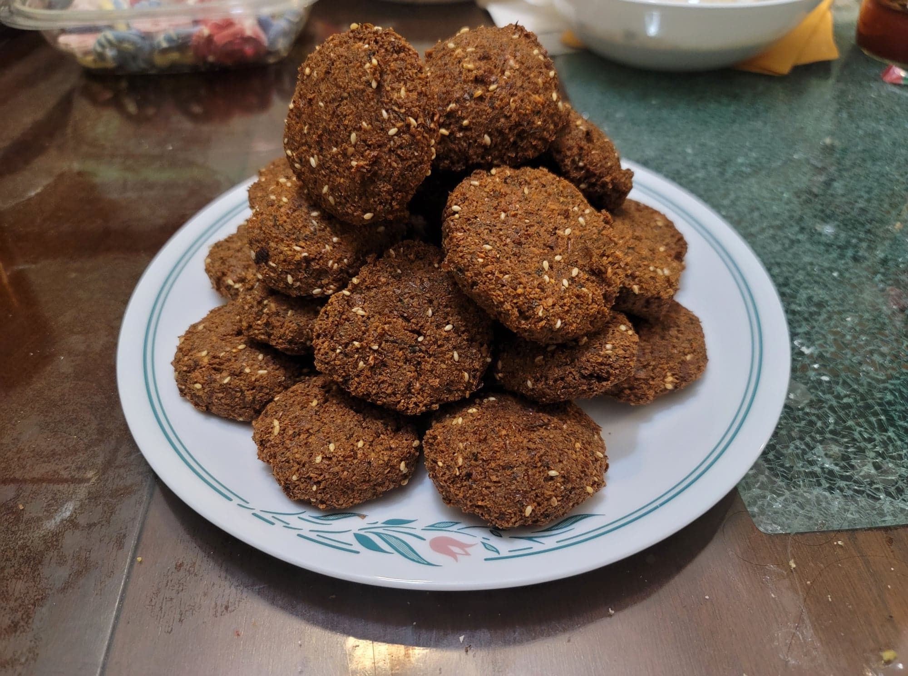

Falafel

Ingredients:
- 2 cups Dried chickpeas
- 1/2 tsp Baking soda
- 1 cup Parsley, stems removed
- 3/4 cup Cilantro, stems removed
- 1/2 cup Dill, stems removed
- 1 small Onion, quartered
- 8 cloves Garlic
- 1 tbsp Salt, or to taste
- 1 tbsp Black pepper
- 1 tbsp Cumin
- 1 tbsp Coriander
- Optional: 1 tsp Cayenne pepper
- 1 tsp Baking powder
- 2 tbsp Sesame seeds, toasted
- Oil for frying
Instructions:
- Place the chickpeas into a large bowl with the baking soda and enough water to cover the chickpeas at least 2 inches. Let soak for at least 18 hours or until soft.
- Drain the chickpeas. Add the chickpeas, herbs, onion, garlic, and spices into a food processor. Process in 40 second segments until finely ground. Transfer the mixture into a sealed container and refrigerate for at least 1 hour.
- Once the mixture is chilled, begin to heat 3 inches of oil in a large pot to 375 degrees Fahrenheit.
- While the oil heats, remove the mixture from the fridge and mix in the baking powder and sesame seeds with a spoon. Then begin to form the mixture into 1/2 inch thick patties, a few tablespoons each.
- Fry the falafel patties in batches for 3-5 minutes each. Then transfer to a plate lined with paper towels before placing onto a serving plate. Serve hot with tahini sauce or hummus.